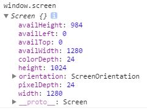
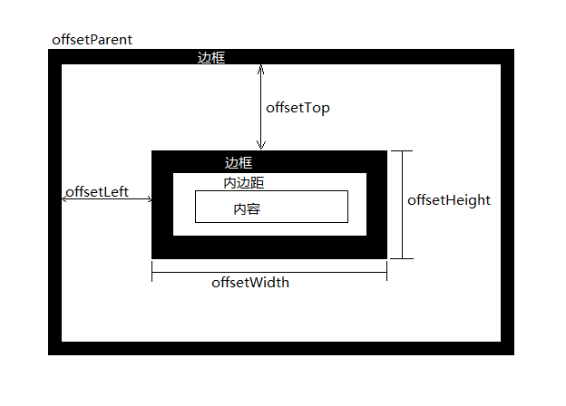
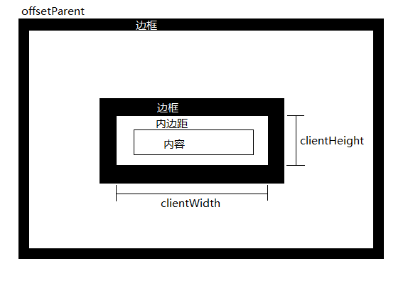
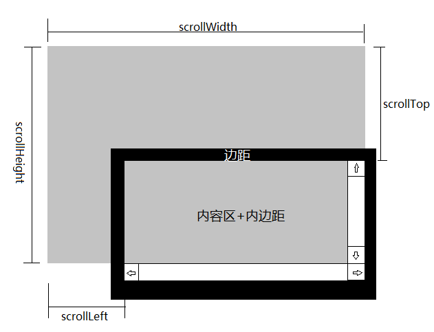

WidthHeight
关键词：clientWidth|offsetWidth|scrollWidth|...
关于定位的一些属性：
图1：

图2：

图3：

图4：

图5：

参考：
1.http://www.soso.io/article/23175.html
2.http://www.cnblogs.com/yuteng/articles/1894578.html
3.http://www.w3cfuns.com/blog-5458331-5405322.html
4.http://www.jb51.net/article/22507.htm
5.http://www.cnblogs.com/wang726zq/archive/2012/05/10/scrollHeight.html
6.http://blog.sina.com.cn/s/blog_6d3fcc7e01016qs2.html
7.http://www.cnblogs.com/wang726zq/archive/2012/05/10/2494256.html
8.http://blog.tvrcgo.com/1135